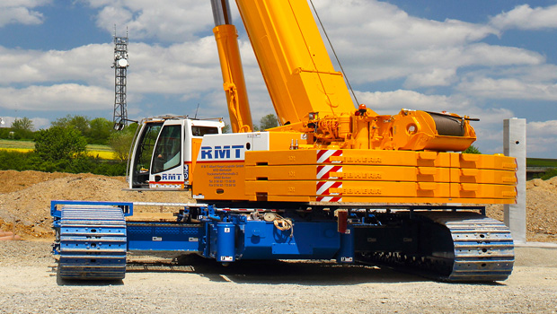
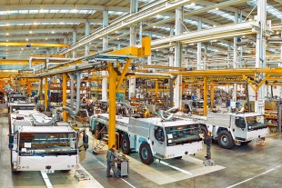
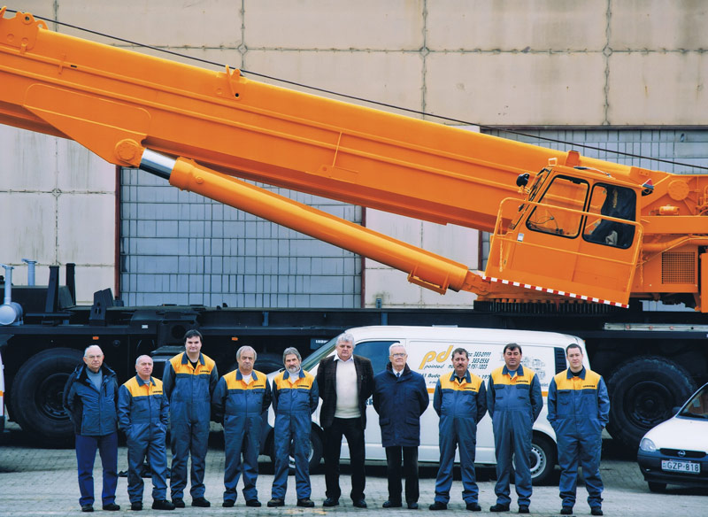

Über uns

Sichere Fonde
Die Pointed Gmbh. hat, nach dem Regimewechsel, von Ungarn's größter Baukonzern die Tiefbau Firma sich gestaltet. Seitdem ist das Unternehmen zu 100% in Privatbesitz.
Deutsche Qualität
Unsere Firma hat die ausschließliche Botschaft der Liebherr-Werk Ehingen GmbH in Ungarn seit fast 30 Jahren. Dazu gehört auch die neue und gebrauchte Auto-, Mobil- und Raupenkrane Verkauf, Service und Ersatzteilversorgung.
Seht weiter!


Langjährige Erfahrung
Unseres Monteurteam steht zur Verfügung um unsere Kunden mit jahrzehntelange Erfahrung. Wir können auch Ihre Kranen mit unseren Servicefahrzeugen am Ort reparieren.